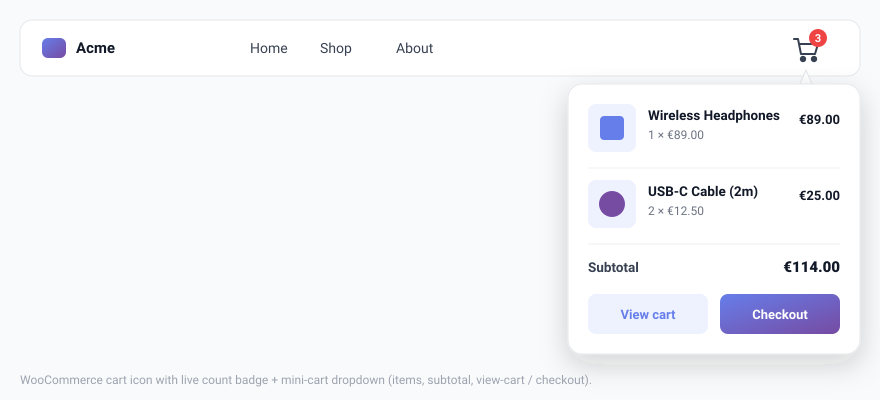

WooCommerce Cart
Display a cart icon with a real-time item count badge directly inside your navigation bar. The badge updates instantly as customers add or remove products — no page reload needed.

Requirements
WooCommerce must be installed and activated for the cart icon to appear. If WooCommerce is not active, the cart icon option is hidden in the settings panel and the icon does not render on the front end.
Enabling the cart icon
- Make sure WooCommerce is active on your site.
- Go to Menu Builder → WooCommerce.
- Toggle Show cart icon in menu to on.
- Save settings.
The cart icon appears at the right end of the navigation bar by default.
Icon position
You can change where the cart icon sits inside the menu bar:
- Right (default) — after all menu items.
- Left — before all menu items.
Set the position in Menu Builder → WooCommerce.
Styling the cart icon
| Option | Description |
|---|---|
| Icon style | Choose between a cart icon, a bag icon, or a basket icon. |
| Icon colour | Inherits the menu item colour by default. Set a custom colour if needed. |
| Show count badge | Toggle to display the item count bubble on the icon. |
| Show total | Toggle to display the cart total amount next to the icon. |
| Badge background | Colour of the round count bubble. |
| Hide when empty | Toggle to hide the icon completely when the cart is empty. |
Mini cart dropdown
Show a small product summary panel when the user interacts with the cart icon — without navigating away from the current page.
- Go to Menu Builder → WooCommerce.
- In the Mini cart setting, choose hover (opens on mouse-over), click (opens on click), or off (disabled).
The cart count updates in real time using WooCommerce’s native fragment system (AJAX). No custom AJAX calls are added by the plugin.